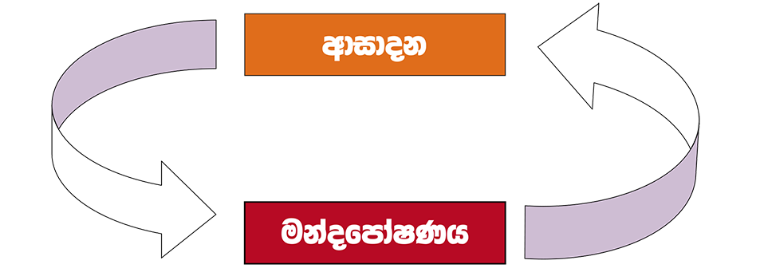
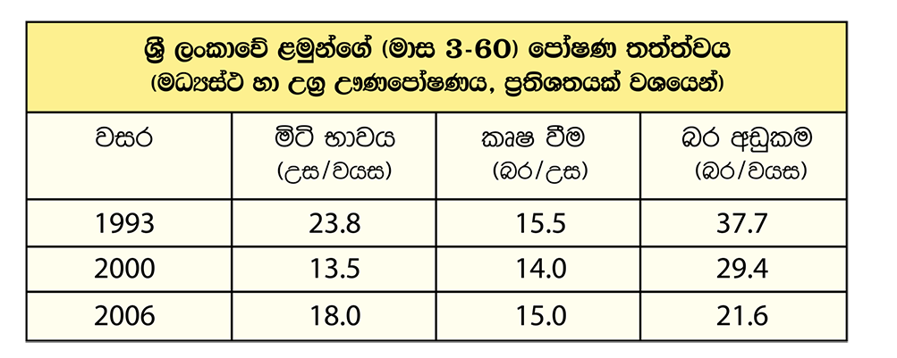

ආසාදන හා මන්දපෝෂණය අතර අන්තර් සම්බන්ධතාවයක් පවති.එක් තත්ත්වයක් ඇතිවිම ,අනෙක් තත්ත්වය වර්ධනය කිරිමට බලපායිත
දරුවකු මන්දපෝෂණයෙන් අරාක්ෂා කර ගැනීම සඳහා ආසාදන හා මන්දපෝෂණය සම්බන්ධ මෙම විෂම චක්රය බිද හෙලිය යුතුය.
මනා පෝෂණ තත්ත්වයක් ලබා දිම ,අසාදන තත්ත්ව වලක්වාලිම හා නිසි ප්රතිකර්ම කිරිම තුළින් මෙම විෂම චක්රය බිද හෙලිය හැකිය.
ජාතික පෝෂණ සමීක්ෂණ වාර්තා වල (1993 -2006) දැක්වෙන පරිදි මන්දපෝෂණය අප රට තුළ තිබෙන ප්රධාන සෞඛ්ය ගැටළුවකි. පසුගිය දශක දෙකක කාලපරිඡ්චේදය තුළ වයසට සරිලන බර අඩු දරුවන්ගේ ප්රතිශතය සැලකිය යුතු අයුරින් අඩුවි ඇතත් ,මිටි භාවය හා කෘෂ විමේ ප්රතිශතය එතරම් අඩුවී නැති බව පහත සඳහන් වගුව අනුව පෙනි යයී
